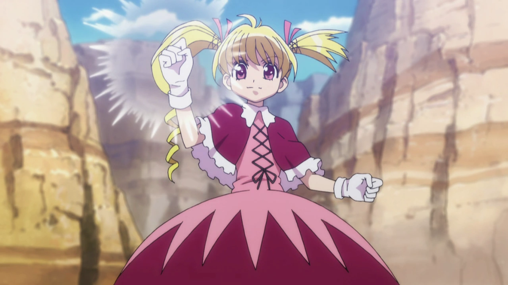
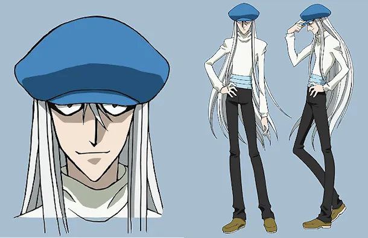
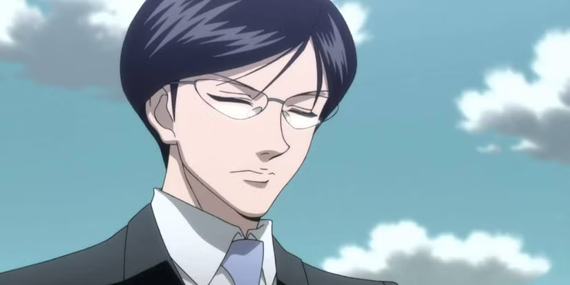

Personal Docente
La Academia cuenta con cazadores de renombre que guían a los estudiantes en el dominio del Nen. Cada uno representa una faceta distinta del poder, la estrategia y la filosofía del aura.

Biscuit Krueger
Instructora de Aura Avanzada

Wing
Profesor de Fundamentos Nen

Kite
Instructor de Combate Estratégico

Morel Mackernasey
Instructor de Control Avanzado

Knov
Profesor de Espacio y Sigilo Nen

Tsezguerra
Mentor de Estrategias Avanzadas